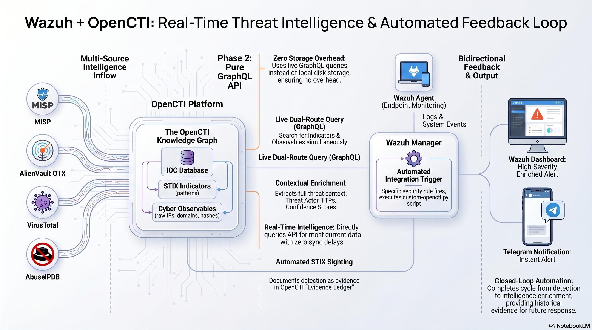
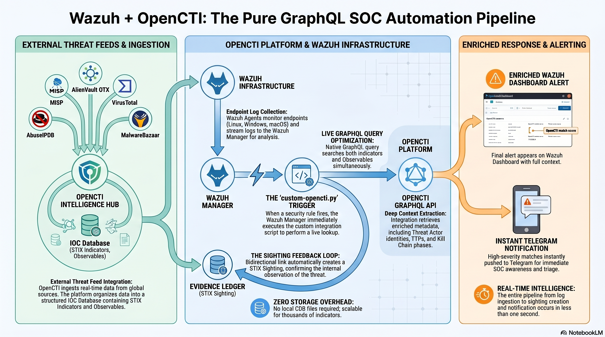

Project Overview
This project was developed in two distinct phases to explore and optimize the integration between Wazuh and OpenCTI. The primary goal was to leverage OpenCTI's vast threat intelligence data to enhance Wazuh's detection capabilities, while also automating the incident response workflow via Telegram alerts.
Phase 1: CDB List Approach
The initial integration method relying on periodic synchronization of Indicators of Compromise (IOCs) into local text files.
- Periodic Sync (Every 6 hours)
- Local File Storage on Wazuh Manager
- Internal CDB Matching
Phase 2: Pure GraphQL API Approach
The production-ready approach eliminating local files and executing real-time, live queries directly to the OpenCTI database.
- Zero Storage Overhead
- Real-Time Data Freshness
- Richer Context (TTPs, Threat Actors)
Phase 1: CDB List Approach
This was the initial integration method used in the lab. It relies on a periodic synchronization process. A Python script pulls Indicators of Compromise (IOCs) from OpenCTI every 6 hours via a cron job and writes them into local text files on the Wazuh manager. Wazuh then matches incoming logs against these static files using its internal CDB (Constant DataBase) list functionality.
Architecture Flow

Phase 1 Specific Workflow

Limitations Identified
This approach consumes disk space as the number of IOCs grows and creates a "sync gap" where new threats discovered between the 6-hour windows are missed.
Proof of Concept Videos (Phase 1)
Phase 2: Pure GraphQL API Approach
This is considered the production-ready approach and was designed to solve the limitations of the CDB method. It eliminates local files entirely. Instead, every alert triggered by Wazuh initiates a live, real-time GraphQL query directly to the OpenCTI database.
Architecture Flow

Advantages
It offers zero storage overhead, real-time data freshness, and provides much richer context (such as threat actor details and TTPs) directly from the OpenCTI threat graph. The integration script extracts all observables from the log (IPs, hashes, domains, etc.) and searches OpenCTI for matching indicators or raw observables.
Proof of Concept Videos (Phase 2)
Automated Alerting Pipeline
Both approaches feature a robust automated alerting mechanism via Telegram. When a high-severity threat is detected and enriched with OpenCTI intelligence, an instant notification is dispatched to a dedicated SOC Telegram channel.